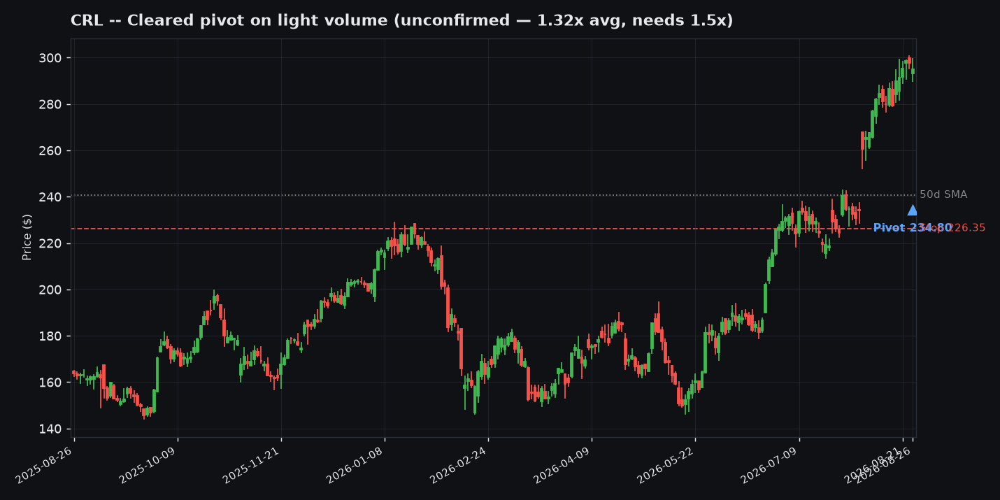
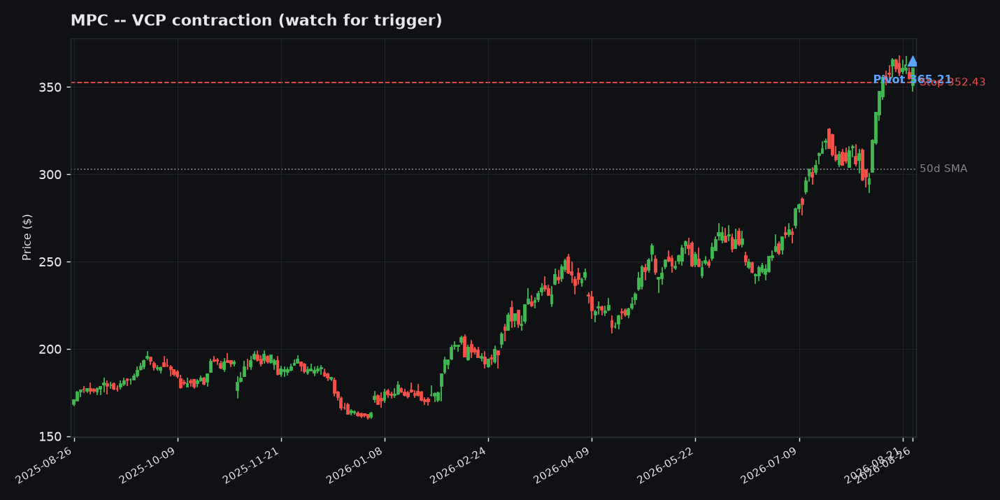
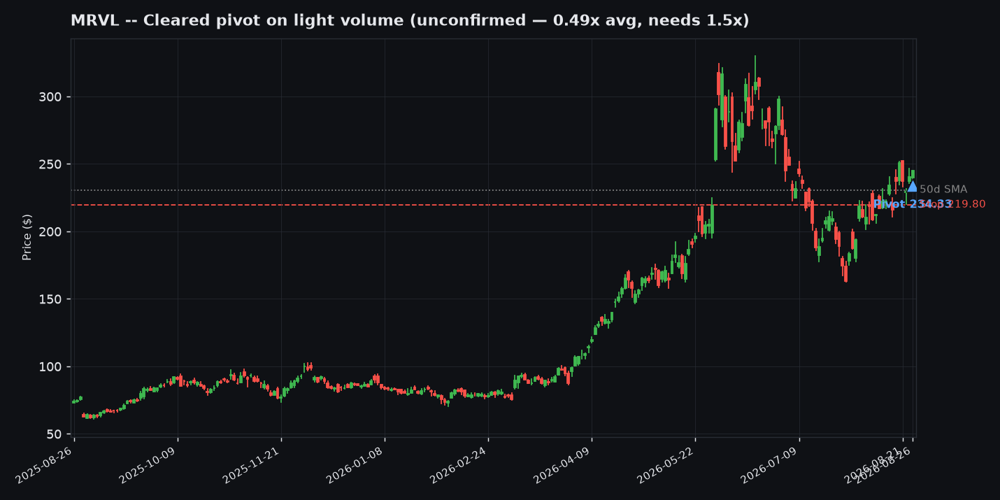

Worth Watching -- Today's Setups in Context
Annotated charts for the 8 tickers currently on the Momentum Desk "Worth Watching" list (as of 2026-08-27), each tagged Minervini / QM / Both -- whichever backtest-proven screen(s) it actually cleared -- with a secondary read against the grinder/rocket archetypes from the backtest's A++ Setup Analysis. The marked pivot is the current entry trigger, the stop is the tighter of the Minervini 7.5%-below-pivot or Qullamaggie 1x-ADR%-below-pivot rule, and the dashed gray line is the 50-day SMA.
This is a screener pass, not a recommendation -- Minervini / QM / Both is which backtest-proven screen actually selected the ticker (see the live track record for how that system has performed); "grinder-leaning" and "rocket-leaning" describe which historical big-winner pattern the ticker's current structure most resembles, a separate, secondary read that is not a guarantee it plays out that way.





